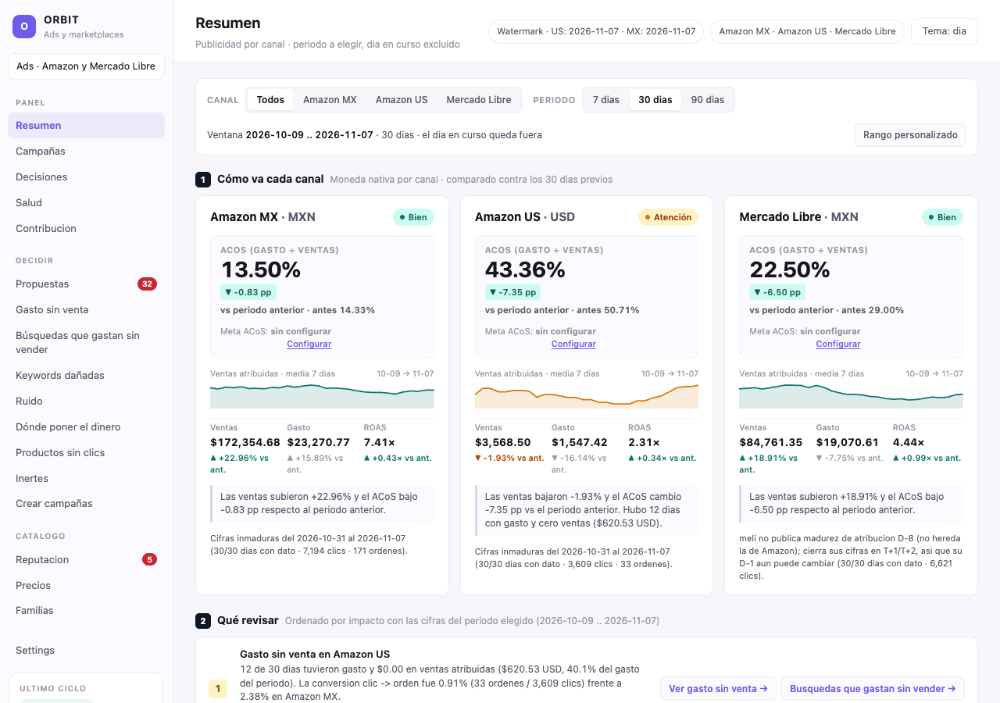

Abre Orbit junto a esta guía. Vas a recorrer cada pantalla del menú, entender qué te muestra y saber cuándo un botón solo consulta y cuándo cambia algo en Amazon.
Sabrás leer cómo va tu publicidad, entender qué decidió Orbit y por qué, revisar lo que está por aplicarse, crear campañas, cuidar la reputación y los precios de tus productos, y ajustar las metas generales.
Empieza aquí
Página 2 · 8 min
Panel · ver cómo va todo
Página 5 · 20 min
Decidir · revisar y actuar
Página 13 · 35 min
Catálogo · cuidar tus productos
Página 34 · 12 min
Ajustes generales
Página 39 · 5 min
Para todos los días
Página 41 · 5 min
Puedes abrir todas las pantallas, mirar tablas, abrir detalles y usar los botones de Simular o Ver sin cambiar nada. Los botones que guardan, lanzan, rechazan, regresan o encienden sí cambian algo. Cada página te avisa cuándo llegas a uno.
Actualizado el 8 de noviembre de 2026. Los recuadros «Tu cuenta» muestran datos reales consultados ese día; cuando hagas el ejercicio verás cifras distintas. Los recuadros «Ejemplo para aprender» usan cifras inventadas para explicar, no son recomendaciones para tu negocio.
Orbit administra la publicidad de tus productos en Amazon México y Amazon Estados Unidos. Cada día lee lo que pasó con tus anuncios y decide si conviene subir o bajar lo que ofreces por un clic, pausar algo que gasta sin vender o dejar todo como está.
Cada clic cuesta dinero aunque la persona no compre. Una venta atribuida es una compra que Amazon relaciona con un anuncio. No son todas las ventas de tu tienda.
| Palabra que verás | Qué significa |
|---|---|
| Campaña | Un conjunto de anuncios con su presupuesto diario y sus ajustes. |
| Grupo (ad group) | Una parte de la campaña. Puede anunciar uno o varios productos. |
| Keyword o palabra clave | Un texto que eliges para que tu anuncio aparezca cuando alguien busca algo parecido. |
| Búsqueda (search term) | Lo que el comprador escribió de verdad en Amazon antes de ver tu anuncio. |
| Puja o bid | Lo máximo que ofreces pagar por un clic. |
| Gasto (spend) y ventas (revenue) | Lo que pagaste en publicidad y lo que vendiste gracias a ella. |
| ACoS | Cuánto gastaste en publicidad por cada 100 de ventas atribuidas. Si gastas 10 y vendes 100, el ACoS es 10 %. |
| Target o meta | El ACoS al que Orbit intenta llegar. |
| Ciclo | Cada vez que Orbit lee los datos y decide. Corre solo, una vez al día en cada mercado, de madrugada. |
| SKU | El código de tu producto. Distingue variantes con nombres parecidos. |
Tu anuncio de unas arras se muestra 1,000 veces, recibe 20 clics y consigue una compra de 500 MXN. Pagaste 50 MXN por esos clics. Son 1,000 impresiones, 20 clics, una venta y un ACoS del 10 %.
Todo está en el menú de la izquierda. En el celular, el menú se abre con el botón de arriba y abajo aparece una barra con los destinos principales.
| Parte del menú | Para qué sirve |
|---|---|
| Panel Resumen, Campañas, Decisiones, Salud, Contribucion | Mirar cómo va todo: gasto, ventas, qué decidió Orbit y si los datos están al día. Aquí casi todo es solo lectura. |
| Decidir Propuestas, Gasto sin venta, Búsquedas que gastan sin vender, Keywords dañadas, Ruido, Dónde poner el dinero, Productos sin clics, Inertes, Crear campañas | Revisar casos concretos y actuar. Por ejemplo, rechazar algo antes de que se aplique, impulsar un producto o crear campañas. |
| Catalogo Reputacion, Precios, Familias | Cuidar tus productos: calificaciones y preguntas, precios y la forma en que agrupas tus productos. |
| Settings | Las metas y topes generales que usa Orbit. |
Muchas pantallas tienen botones Amazon MX y Amazon US para elegir el mercado; otras muestran los dos juntos. MXN son pesos mexicanos y USD dólares estadounidenses. Revisa siempre qué mercado está elegido antes de leer una cifra.
El Watermark decía US: 2026-11-07. La revisión de madrugada de Estados Unidos terminó con 33 decisiones. Esa tarde corrió una revisión extra que no tomó ninguna. Salud guarda los últimos 14 ciclos.
Casi todo Orbit es para mirar. Puedes abrir, filtrar, ordenar y simular sin miedo. Solo unos pocos botones cambian algo, y todos piden confirmar.
En cada ciclo Orbit cambia pujas directamente. Las pausas, los bloqueos de búsquedas y las keywords nuevas esperan 48 horas en Propuestas. Si nadie las rechaza, se aplican solas al vencer, siempre que sigan haciendo falta y no estén en modo práctica. No hacer nada no es lo mismo que rechazar.
Un guion (—) o «sin dato» no es cero. Casi siempre falta la información. En una columna que no aplica, como la puja de una pausa, quiere decir «no aplica». Nunca lo leas como «no vendió» o «no gastó».
Resumen es la primera pantalla de Orbit. Junta en una sola vista el gasto, las ventas y el ACoS de Amazon México, Amazon Estados Unidos y Mercado Libre, y los compara con el periodo anterior.

La pantalla tiene cinco partes numeradas. 1. Cómo va cada canal muestra una tarjeta por mercado. 2. Qué revisar lista los avisos del periodo, «Ordenado por impacto», con enlaces a la pantalla donde se atienden. El número 1 es el que más pesa. 3. Tendencia dibuja ventas y gasto día por día. 4. Totales por moneda suma pesos con pesos y dólares con dólares. 5. Tablas detalladas guarda las mismas cifras en tablas. Ábrelas con un clic.
Esta pantalla es solo de lectura. Los filtros cambian lo que ves, no lo que hace Orbit.
Cada tarjeta habla de un mercado en su propia moneda. La etiqueta de arriba a la derecha dice si conviene mirarlo con calma.
| Lo que ves | Qué significa |
|---|---|
| Bien / Atención / Sin dato | Con meta de ACoS, Bien es estar en la meta o abajo. Sin meta, Bien es que las ventas subieron y el ACoS bajó. Lo demás es Atención. Sin dato, no hay cifras. |
| ▼ -0.83 pp y ROAS 7.41× | El ACoS bajó 0.83 puntos porcentuales, y en el ACoS bajar es bueno. ROAS es ventas entre gasto. 7.41 pesos vendidos por cada peso de publicidad. |
| Meta ACoS: sin configurar | Nadie fijó una meta para ese mercado. Configurar te lleva a Settings (página 39). |
| Cifras inmaduras del … al … | Los últimos 8 días de Amazon todavía cambian porque siguen llegando ventas. En las tablas diarias llevan asterisco (*). Mercado Libre trae otra nota. Ahí cambian las cifras de ayer. |
| Gasto sin venta en Amazon US, en Qué revisar | Cuenta días con gasto y cero ventas. Su enlace Ver gasto sin venta abre otra pantalla, que lista búsquedas y puede estar vacía. |
| cobertura incompleta, en Totales | A algún canal de esa moneda le faltan días con cifras. La suma se queda corta. |
| Línea fina y línea gruesa en Tendencia | La fina es cada día. La gruesa es la media de 7 días. «ya trae el contrato» quiere decir que Orbit la calcula antes de dibujarla. Un hueco es un dato que falta, no un cero. |
Gastas 1,000 MXN y vendes 5,000 MXN. El ACoS es 20 % y el ROAS 5×. Antes fue 25 %, así que la tarjeta muestra ▼ -5.00 pp.
Con 30 días, Amazon MX decía Bien con ACoS 13.50 %. Amazon US decía Atención con 43.36 %. El punto 1 de Qué revisar era Gasto sin venta en Amazon US, 12 de 30 días ($620.53 USD).
Campañas muestra las campañas de Amazon que tienen cifras en los últimos 30 días, aunque sean cero, con su gasto, sus ventas y su ACoS, junto a la meta que Orbit usó con ellas.
Una campaña sin cifras en esos 30 días no sale, aunque exista en Amazon. Por eso Estado ofrece pausada y archivada, pero casi siempre dan 0 campañas. Y por eso una campaña que ves en Decisiones o en Contribucion, como A1U - Category Exact - US, puede no aparecer aquí.
Abre casillas para Cost, Revenue Ads, Clicks, ACoS y Target. No son un mínimo y no aceptan «>100». Cost, Revenue Ads, ACoS y Target buscan el texto que escribes dentro de la cifra. «45» deja las campañas cuyo gasto contiene 45, como 45.52 o 1245.10. Escribe las cifras sin comas. En ACoS también puedes escribir «sin ventas». En Clicks, un número entero busca exactamente esos clics.
Sin tocar nada, salen primero las de Estados Unidos y luego las de México. Pulsa el nombre de una columna para ordenar. En cifras, el primer clic pone arriba la más alta. En texto, ordena de la A a la Z. Una flecha ↓ o ↑ marca la columna elegida y un segundo clic invierte el orden. Las filas sin dato quedan al final.
La columna Cost (30d) ordena por la cifra y no mira la moneda. Con Plataforma en todas, 9,015.78 MXN queda arriba de 466.14 USD aunque valen distinto. Para comparar gasto, elige primero amazon_mx o amazon_us.
El Target efectivo es el ACoS meta que Orbit usó con las keywords y los targets de esa campaña en su último ciclo en live que terminó, aunque ese ciclo no haya cambiado nada.
Si la campaña usó metas distintas, verás un rango, como 19.50–20.10 %. sin target es que ese ciclo no evaluó nada de ella. La Procedencia dice de dónde salió la meta. Orbit revisa las fuentes en el orden de la tabla y usa la primera que tenga un valor.
| Procedencia | De dónde sale la meta |
|---|---|
| goal_campana | Una meta escrita a mano solo para esa campaña. |
| goal_plataforma | Una meta escrita a mano para todo el mercado. |
| margen_producto | La meta del producto, calculada con su margen. Solo aplica en grupos que anuncian un único producto. |
| margen_familia | La meta de la familia de productos (página 38). |
| margen_plataforma | Una meta calculada con el margen de tus ventas en ese mercado. Se mueve entre 10 % y 45 %. |
| setting_plataforma | El ACoS que alguien escribió en Settings para ese mercado. |
| mixto | Las keywords de la campaña usaron fuentes distintas. |
Bajo el nombre, platform · live · floor 0.1000 · ceiling 2.5000 dice qué regla manda (platform, del mercado, o campaign), si los cambios son reales (live) o simulados (shadow) y el bid mínimo y máximo. sin goal es que no tiene regla. Si ves la meta con muchos decimales, solo cuentan los dos primeros, redondeados.
Con target 20 % y ACoS 26 %, la campaña sale en naranja con +6.00 pp sobre target.
AC - Category Exact - MX gastó 9,015.78 MXN y vendió 95,514.51 MXN, con ACoS 9.44 % En target, target 20.02 % y procedencia margen_plataforma. USPerNog - Category Exact - US marcaba 71.57 %, +52.20 pp sobre 19.37 %. Ese target salió de la revisión extra de las 17:58 UTC, que tomó 0 decisiones.
Decisiones es la bitácora de Orbit. Cada fila es un cambio que decidió en un ciclo, con su motivo. La más nueva va arriba y hay 50 por página.
| Lo que ves | Qué significa |
|---|---|
| «hoja» en un motivo | Una keyword o un target solo, la pieza más chica que lleva bid. |
| «su grupo sangra» | El grupo de anuncios gasta más de 15 % arriba de su meta, o gastó el mínimo sin vender. |
| «sobre el equilibrio» | El ACoS en que la publicidad se come todo el margen. Arriba de él, cada venta pierde dinero. |
| «al doble de concluir» | Gastó dos veces el mínimo para juzgar sin ventas, 350 MXN o 36 USD por omisión. |
| «sustituto», «mismo ASIN B07FP1GH8Q» y las que terminan en «amplia» o «cercana» | No son keywords escritas, son blancos automáticos de Amazon. mismo ASIN es la página de ese producto. sustituto, productos que compiten con el tuyo. amplia y cercana, búsquedas poco o muy parecidas a tu producto. |
| Target usado 19.36610636923199718608899984% | La meta de ese momento. Solo cuentan dos decimales, redondeados. Es 19.37 %. |
| Bid «— → —» | No aplica. Una pausa no cambia el bid. |
Una fila no confirma el cambio en Amazon. Las pausas esperan 48 horas en Propuestas (página 13). producto_sin_ventas sale sin traducir. Es la pausa del anuncio de un producto que no vende.
Había 2900. La #2868, en arras · AU2 - Category Phrase - US, subió el bid de 0.22 a 0.30 USD con «Regreso: el bid nuevo desplomo el trafico». Pantalla solo de lectura.
Salud dice si el último ciclo de cada mercado terminó y si llegaron los datos de Amazon. Ábrela cuando algo no cuadre.
| Lo que ves | Qué significa |
|---|---|
| done en verde y live | El ciclo terminó. También puede decir running (corriendo), skipped (no corrió), degraded (con fallas) o failed (falló), estos dos en rojo. live cambia cosas en Amazon, shadow solo simula y off está apagado. |
| Skips del ultimo ciclo | Un skip es algo que Orbit revisó y decidió no tocar. La gráfica cuenta cuántos hubo por motivo. Las etiquetas largas salen cortadas a la izquierda. Pasa el cursor sobre una barra para leer el motivo completo y su número. |
| Watermark y Sync estructura | El último día con cifras de ese mercado y la última vez que Orbit leyó tus campañas en Amazon. |
| Ingesta Ads principal | Reportes descargados de Amazon. written es que se guardaron. Edad de 1 día es normal. |
| Línea roja con telegram | El ciclo terminó pero el aviso al celular no salió. Aunque diga done, revísalo. |
Un ciclo revisa 2,000 keywords de campañas pausadas o sin clics nuevos. Son 2,000 skips y 0 decisiones. No es una falla.
Los dos mercados decían done y live. En Estados Unidos, el ciclo #174 de las 08:40 UTC tomó 33 decisiones y el #176 de las 17:58 UTC, una corrida extra, tomó 0. La barra más larga de Estados Unidos era «Campaña no habilitada (pausada/archivada o sin estado)», con 1,620 casos.
La página siguiente explica el resto de la tarjeta.
Debajo del último ciclo hay más secciones. Mira si hay algo en rojo. Desde aquí no se arregla nada.
| Lo que ves | Qué significa |
|---|---|
| Quota del dia | Cambios de cada tipo hechos hoy (Usado) contra el tope diario (Cap). saturada, en rojo, llegó al tope y el resto espera. |
| La tabla de spapi_orders, spapi_pricing y dos filas más | Otra conexión que lee pedidos, precios, publicaciones e inventario de Amazon. ok en verde, la última lectura terminó. fallo en rojo, no. |
| Motivo como «49x http_404, 1x red» | Productos que quedaron fuera. http_404, Amazon no los encontró. red, falla de conexión. Con ok, el resto sí se leyó. |
| Destino de harvest «por terna 8 (migracion … pendiente)» | Adónde lleva Orbit las búsquedas que venden. «por terna» es que usó la campaña y el grupo escritos en la meta de la campaña. La nota avisa que falta pasarlo a la forma nueva, y no es una falla. Campañas de grupo sin destino, en rojo, sí. |
| Precios y Avisos de campaña | El conteo de hoy del motor de precios (página 36) y las frases del día que llegan por Telegram. |
| Jev, al final, «Encendido» | Jev compara búsquedas con la ficha de tus productos. Encendido solo dice que su interruptor está prendido, y Última corrida no trae fecha. Para saber si corre, mira Calculado el en Gasto sin venta (página 16). |
Toma una captura y avisa al responsable. Igual si el recuadro Último ciclo, abajo del menú, dice «No se pudo consultar». «Sin consultar» sale mientras la pantalla carga, y en pantallas lentas como Inertes dura más. Si ya cargó y sigue, recarga.
En Estados Unidos, spapi_listings decía ok con «49x http_404, 1x red». Jev decía Encendido con «Llamadas hoy: 0», pero Gasto sin venta seguía con Calculado el 2026-10-21.
Pulsa Contribucion en el menú. Estima cuánto dinero dejó cada campaña después de pagar el producto y la publicidad. Mira 90 días ya cerrados y muestra un rango, no una cifra exacta.
La cuenta es ventas atribuidas a la campaña, menos lo que te cuesta el producto, menos el gasto en publicidad. rango pre-cargos quiere decir que todavía no resta comisiones de Amazon, devoluciones ni impuestos retenidos. Lo que te queda es menos.
| Lo que ves | Qué significa |
|---|---|
| -187.54 .. 93.99 | La primera cifra cuenta solo ventas del producto anunciado. La segunda suma otros productos que el comprador se llevó después del clic. |
| 90d maduros y «vintage D-15 UTC» | 90 días que terminan 15 días antes de hoy, contados en hora UTC. Amazon ya terminó de contar esas ventas. |
| «El rollup suma las entidades hijas … (D2)» | Orbit suma las cifras de las keywords y los targets de la campaña. |
| — (catalogo parcial) | Falta información, por ejemplo el costo de algún producto. No es cero. |
| precio min multilisting y FX aproximado · nearest_prior | Se usó el precio más bajo entre varias publicaciones, o el tipo de cambio del día previo más cercano. |
-100 .. 400 MXN quiere decir que con el producto anunciado perdió 100 pesos y, contando lo demás que compraron sus clientes, dejó hasta 400. Si esas compras llegaron por el anuncio, ganó. Si habrían pasado igual, perdió. Orbit no sabe cuál. Con las dos cifras negativas, perdió aun en el mejor caso.
Ventana del 27 de julio al 24 de octubre. A1U - Category Phrase - US cruzaba el cero con -187.54 .. 93.99 USD. A1U - Category Exact - US era negativa en las dos puntas, -540.73 .. -264.56 USD. Esa no salía en Campañas, porque no tuvo cifras en los últimos 30 días.
Propuestas reúne los cambios que Orbit quiere hacer y que esperan 48 horas antes de aplicarse. Ves qué se va a cambiar, en qué mercado y cuándo vence, y puedes rechazarlo.
Solo esperan aquí tres tipos de cambio. Apagar, bloquear una búsqueda y crear una keyword. Los cambios de bid se aplican en el ciclo y los ves en Decisiones (página 9).
| Lo que ves | Qué significa |
|---|---|
| Apagar palabra | Pausar una keyword, un target o un anuncio. Si la Entidad empieza con un código como B0CR78WCH5, se pausa el anuncio de ese producto. Es una pausa por producto (página siguiente). |
| Bloquear busqueda | Agregar un negative. Tu anuncio deja de salir para esa búsqueda en ese grupo. |
| Capturar termino que vende | Crear una keyword con una búsqueda que ya vendió y bloquear esa búsqueda en el grupo de donde salió. |
| Por que con «—» | Solo Capturar muestra órdenes e ingreso. En las demás filas el guion quiere decir «no aplica». |
| Señal con «Jev: 16 de 16» y desactualizada | Jev es la revisión automática de Orbit que compara una búsqueda con la ficha de cada producto. Revisó 16 productos y coincidió con los 16. desactualizada es que esa revisión ya es vieja. |
La tabla de Propuestas no distingue las propuestas de práctica de las reales. Para una pausa por producto, la respuesta está en Productos sin clics.
Su sección Pausa por producto solo lee el último ciclo. Un anuncio que ya tiene una pausa esperando en Propuestas no se vuelve a proponer. Por eso el ciclo siguiente cuenta 0, mientras Propuestas sigue mostrando las pausas de antes. Las dos pantallas dicen la verdad.
Había 32 propuestas de Estados Unidos que vencían el 2026-11-10 08:40. Una era Bloquear busqueda para wedding arras. Las otras 31 eran Apagar palabra sobre anuncios de producto, como B0CR78WCH5.
Encendido de la pausa decía Práctica en los dos mercados. En Amazon US, Pausa por producto decía «0 de 119 con propuesta» y «Ciclo 176 · la pausa está en práctica: las propuestas quedan registradas y no pausan ningún anuncio».
Rechazar impide que la propuesta se aplique y evita que Orbit la repita durante los días que elijas. No hacer nada no es rechazar.
No hay botón para quitarlo y no reactiva algo ya pausado. Si ya se está enviando a Amazon, sale un error y no se frena. Al terminar el bloqueo, Orbit puede volver a proponerla.
El recuadro dice «bloquea la propuesta hasta el» con la fecha de Vence, pero el bloqueo dura los días de Dias. Confírmalo en «Rechazado hasta».
| Lo que ves | Qué significa |
|---|---|
| Campañas, botón Descartar | Campañas que gastan de más. No se aplican solas. Si estás de acuerdo, pausa esa campaña tú en la consola de Amazon Ads, el sitio donde Amazon administra tus campañas. Descartar solo cierra el aviso en Orbit, pide Actor y Token, y no se deshace. |
| Búsquedas que Jev marca como ajenas, Bloquear y Rechazar | Búsquedas que no son de tus productos. Bloquear agrega el negative en Amazon al momento. Rechazar guarda que no la quieres bloquear. Piden Token. |
| Tus bloqueos, botón Quitar | Los bloqueos que aprobaste. Quitar retira ese negative de Amazon. |
No había sección Campañas. Las búsquedas ajenas decían «sin propuestas» y Tus bloqueos, «sin bloqueos».
Lista búsquedas que gastaron sin conseguir órdenes y te dice, para cada una, si corresponde a tus productos. Es solo de lectura. No tiene botones.
El mismo nombre sale en otros lados con otro sentido. En Resumen, Gasto sin venta cuenta días. En Campañas es una pestaña de campañas. Esta pantalla habla de búsquedas.
| Lo que ves | Qué significa |
|---|---|
| Vendió aquí | Ya consiguió órdenes en ese grupo en otro momento. Bloquearla es arriesgado. |
| Vende en otro ad group | Vende en otro grupo. Bloquearla aquí manda ese tráfico al grupo donde sí vende. |
| Corresponde y no vende en ninguno | Es de tu catálogo y no convierte. Se divide en Ninguno, Pocos (hasta 15%), Una parte, Todos (95% o más) y Sin dato, según cuántos productos dijeron que sí. |
| Ajena | No corresponde a ninguno de tus productos. La pantalla sugiere bloquearla pronto. |
| Sin lectura | Falta un dato para concluir. Un dato faltante no es cero. |
| Jev: 3 de 16 | Jev, la revisión automática, comparó la búsqueda con 16 productos y 3 coincidieron. |
«cofre de madera» gastó 120 MXN sin órdenes, con Jev 0 de 16. Sale como Ajena. «arras doradas» gastó 90 MXN, con Jev 14 de 16, y vende en otro grupo. Sale como Vende en otro ad group.
Estaba vacía en los dos mercados, con «Calculado el 2026-10-21 09:34» y «Sin cálculo reciente». Decía «el job sigue apagado o nada gasta sin vender». El job es la revisión de Jev. Salud decía Jev Encendido, pero eso solo dice que el interruptor está prendido. Mira Calculado el. Vacío no quiere decir que nada gaste sin vender.
Suma 90 días de búsquedas de tus campañas encendidas y te muestra dónde se va el dinero sin una sola orden. Es solo de lectura. Cómo bloquear algo está en la página siguiente.
| Lo que ves | Qué significa |
|---|---|
| Quién entra a la lista | Lo que ya gastó el mínimo para concluir sin ninguna orden. Por omisión, 350 MXN o 36 USD. |
| «de arras» con 30 en Búsquedas | Juntó 30 búsquedas distintas que contienen «de arras». Ninguna vendió en esos 90 días. |
| A medio camino | Cuántas llevan entre la mitad y el total del mínimo, todavía sin vender. |
Si bloqueas «set» o «sin» como negative de frase, tu anuncio deja de salir también en búsquedas buenas que la contienen, como «set de arras matrimoniales». Usa esta lista para entender, y bloquea búsquedas completas.
«El azar daría 29 %» es la parte del gasto que caería en búsquedas sin venta aunque todas vendieran como el promedio de tu cuenta. Solo la diferencia contra el azar se podría recuperar.
De cada 100 pesos, 40 caen en búsquedas sin venta y el azar daría 30. Bloquear todo recuperaría a lo mucho 10, y bloquearía búsquedas buenas con mala suerte.
En México decía «39 % de tu gasto cayó en búsquedas que no vendieron. Con la conversión de tu cuenta, el azar daría 29 %». El ASIN B0C11QJPKV sumaba 655.79 MXN sin vender. En Estados Unidos, 62 % contra 59 %.
Las dos hablan de búsquedas que se llevan dinero sin vender, y ninguna de las dos tiene botones. Cambian de dónde sale la lista, qué periodo miran y qué te ayudan a decidir.
| Pregunta | Cómo responde cada pantalla |
|---|---|
| ¿Qué cuenta como «sin venta»? | Gasto sin venta incluye toda búsqueda con gasto y cero órdenes, desde el primer peso. Búsquedas incluye solo lo que ya gastó el mínimo, 350 MXN o 36 USD, en 90 días. |
| ¿Cómo arma la lista? | Gasto sin venta pone una fila por búsqueda dentro de su grupo. Búsquedas junta por página de producto y por palabra repetida. |
| ¿Qué te dice además? | Gasto sin venta dice si la búsqueda corresponde a tus productos. Búsquedas dice cuánto del gasto perdido se explica por azar. |
| ¿Cuándo se actualiza? | Gasto sin venta, cuando corre la revisión de Jev. Avisa si tiene más de 36 horas. Búsquedas, al abrirla, con datos hasta tres días antes de hoy. |
| ¿Cómo actúo? | Desde ninguna. En la consola de Amazon Ads abre la campaña y el grupo de esa búsqueda, y agrégala como negative de tipo exacto, el que usa Orbit. Así bloqueas solo esa búsqueda. Si sale como ajena en Propuestas, usa ahí Bloquear (página 15). |
«cofre de madera» gastó 400 MXN sin vender en Búsquedas y sale como Ajena en Gasto sin venta. Las dos coinciden y bloquearla tiene sentido.
Búsquedas mostraba en México «estuche para» con 9 búsquedas y 735.35 MXN sin vender. Gasto sin venta no podía decir si eran de tus productos, porque su último cálculo era del 21 de octubre y estaba vacío.
Muestra keywords que vendían, recibieron uno o más recortes de bid seguidos y casi se quedaron sin clics. Esta pantalla sí cambia algo. Regresar una keyword le sube el bid en Amazon en ese momento.
| Lo que ves | Qué significa |
|---|---|
| Vendía 3 pedidos (2193.09 MXN) | Pedidos y ventas en los 3 meses antes del primer recorte. |
| Clics cada 2 semanas: 8 antes, 0 ahora | Entra a la lista cuando ahora recibe menos del 30 % de los clics que tenía antes de los recortes. |
| tras 5 recortes | Cuántas veces seguidas Orbit bajó su bid. Puede ser una sola. |
| Regresar el bid a 3.95 · Regresar todas | El botón de cada tarjeta devuelve el bid de antes de la racha. El recuadro de arriba regresa todas las pendientes. |
Regresar el bid a… pide Actor y Token, y luego Confirmar regreso. Regresar todas además pide escribir la frase que muestra, por ejemplo REGRESAR 2 KEYWORDS. Un bid más alto puede traer más gasto.
Después Orbit espera 7 días sin tocarla. Luego no la recorta hasta que junte 20 clics o pasen 14 días, y nunca la vuelve a bajar hasta el bid que la dañó. Comprueba el mensaje «Regresado a…» o «Regresadas 2 de 2».
México tenía 3 tarjetas. «sustituto», en ASEM - Auto Discovery - MX, vendía 3 pedidos (2193.09 MXN). Sus clics pasaron de 8 a 0 y su bid de 3.95 a 2.09 tras 5 recortes. «mismo ASIN B086TVLJ43» decía Regresada el 2026-10-11, con bid de 36.99 antes y hoy, y seguía en 0 clics.
Cada ciclo Orbit revisa miles de keywords y decide si cambia su bid. Ruido te muestra cuántas cambió, cuántas dejó igual y por qué. Así ves si Orbit actúa con evidencia o se deja llevar por casualidades. Es solo de lectura.
Con pocos clics, los números engañan. Una keyword puede pasar 20 clics sin vender por mala suerte y vender tres veces en los 20 siguientes. Si Orbit bajara el bid en cada mala racha, se movería por azar.
Por eso Orbit cambia un bid solo cuando la diferencia ya es clara. Eso es la señal. Si todavía puede ser casualidad, deja el bid igual y lo anota como azar_lo_explica. Dejarlo igual se llama abstenerse.
Lanzas una moneda 4 veces y sale águila 3 veces. No concluyes que la moneda está cargada. Con 400 lanzamientos y 300 águilas, sí. Una keyword con 1 venta en 10 clics se parece a la primera moneda. Una con 40 ventas en 400 clics, a la segunda.
«Hoja 3861 · Bid: 13.64 antes, 3.71 hoy (MXN). Quedó en 27.20 %» quiere decir que el bid de hoy es el 27 % del que tenía antes de su primer cambio en los últimos 90 días. Una hoja es una keyword o un target. La tarjeta da su número interno, no su nombre.
Al final, compara gasto, pedidos, venta y ACoS de los 30 días antes de encender la forma actual de decidir bids con los días desde entonces. No prueba que Orbit causó la diferencia. La temporada, los precios o las campañas nuevas también mueven estos números.
La página 2 explica ciclo, bid y ACoS. La página siguiente traduce los motivos.
Ruido muestra los motivos con su nombre interno. Esta tabla traduce los que más aparecen. Para otros, la gráfica de skips de Salud muestra los motivos del último ciclo en palabras al pasar el cursor (página 10).
| Lo que ves | Qué significa |
|---|---|
| bajo_target · hoja: 7 | Subió 7 bids un 15 % porque el ACoS de esas keywords está por debajo de la meta. «hoja» es la keyword sola. «ad_group» quiere decir que juzgó a todo su grupo. |
| grupo_sangra_vendedora | La keyword vende, pero su grupo gasta más de 15 % arriba de su meta. Bajó el bid 12 %. |
| regreso_por_desplome | Regresó un bid porque el cambio anterior hizo caer el tráfico. |
| azar_lo_explica | Se abstuvo. La diferencia todavía puede ser casualidad. |
| grupo_cumple · sin_evidencia | Se abstuvo. El grupo ya cumple la meta, o no hay datos suficientes ni en la keyword ni en su grupo. |
| esperando_efecto · sin_clics_nuevos | Se abstuvo. El último cambio de bid es reciente y espera 7 días o clics nuevos para medirlo. |
| sin_gasto · venta_reciente · dato_faltante | Se abstuvo. No gastó, vendió hace poco y esa venta todavía puede crecer, o falta un dato. |
| campana_no_enabled · estado_no_enabled · entidad_inerte | Ni siquiera la juzgó. La campaña o la keyword no está habilitada, o no tuvo impresiones en 14 días. |
En México, el último ciclo (Ciclo 177 · 2026-11-08 17:58) no tuvo decisiones y anotó 22 veces azar_lo_explica. Encendido el 2026-10-11, el ACoS de México pasó de 14.42 % a 13.57 % y el de Estados Unidos de 33.70 % a 50.93 %.
En Estados Unidos, la Hoja 5338 decía «Bid: 0.68 antes, 0.23 hoy (USD)». En Keywords dañadas, «arras de boda cristiana» tiene ese mismo bid, así la reconoces.
Esta pantalla reparte el gasto de publicidad por tipo de campaña, por el lugar donde salió el anuncio y por campaña. Sirve para ver qué gasta mucho y vende poco. Solo cuenta lo encendido.
| Lo que ves | Qué significa |
|---|---|
| exact, phrase, broad | Campañas con keywords. exact muestra el anuncio solo con esa búsqueda. phrase, cuando la búsqueda contiene la frase. broad, con búsquedas parecidas. |
| automatica y product_targeting | En automatica Amazon elige dónde mostrar el anuncio. En product_targeting el anuncio sale en páginas de otros productos que tú elegiste. |
| Parte del gasto | Qué porcentaje del gasto total se fue en esa fila. |
| arriba de búsqueda, resto de búsqueda | El primer renglón de resultados y el resto. |
| páginas de producto, fuera de Amazon | La página de otro producto, y sitios o apps que no son Amazon. |
| CPC y Conversión | Lo que pagaste en promedio por clic, y de cada 100 clics cuántos terminaron en pedido. |
El total no coincide con el Resumen porque aquí no entra lo que apagaste. Si un lugar gastó sin vender, abajo aparece una frase como «Fuera de Amazon: 900 MXN en 30 días, 600 clics, ningún pedido.»
exact gasta 400 MXN y vende 4,000. Su ACoS es 10 %. broad gasta 300 y vende 1,000. Su ACoS es 30 %. Con target de 20 %, broad es lo primero que conviene mirar.
En Amazon MX, del 9 de agosto al 7 de noviembre, el Total marcaba 54484.67 MXN de gasto con ACoS 13.8 % (target 20.0 %). La fila exact llevaba 40.5 % del gasto con ACoS 10.6 %. En 30 días, fuera de Amazon gastó 3611.23 MXN, consiguió 3 pedidos y tenía ACoS 157.6 %.
La tabla Por campaña dice cuánto puede gastar al día cada campaña encendida, cuánto gasta en realidad y qué avisa Orbit.
| Lo que ves | Qué significa |
|---|---|
| Presupuesto/día y Gasto medio/día | Lo máximo que puede gastar en un día, y su gasto promedio por día en 30 días, solo con días con dato. |
| Uso | Gasto medio entre presupuesto. 100 % o más quiere decir que, en promedio, gasta todo su presupuesto cada día. |
| Estrategia | Si Amazon puede mover tu puja al mostrar el anuncio. «solo hacia abajo», «hacia arriba y hacia abajo» o «fija». |
| Ajustes | «+9 % en arriba de búsqueda» quiere decir que la campaña puede pagar hasta 9 % más por clic cuando sale en el primer renglón. |
| Fuera de Amazon | Lo que gastó la campaña en 30 días en sitios y apps que no son Amazon. |
| «se queda sin presupuesto» | Gastó 90 % o más de su presupuesto en 5 o más de los últimos 7 días. |
| «este presupuesto no limita» | Su presupuesto es más de 10 veces lo que gasta. |
| «Orbit movió el precio hace 3 días; espera al día 7 para juzgarlo.» | Hace 3 días alguien aplicó un Cambiar ajuste de ubicación en esa campaña. Aquí «precio» es lo que se paga por clic en esa ubicación, no el precio del producto. Espera al día 7 para juzgar el cambio. |
En Amazon MX, AC - Category Exact - MX tenía 300.00 de presupuesto, gastaba 300.53 al día, Uso 100.2 %, y el aviso «se queda sin presupuesto». Arras Auto 2 tenía 293.94 y gastaba 2.47.
Uso 100.2 % quiere decir que gasta, en promedio, todo lo que tiene al día. Cuando el presupuesto se acaba, Amazon deja de mostrar sus anuncios hasta el día siguiente. Compara su ACoS con el target. Si está abajo, la campaña vende dentro de la meta y es candidata a más presupuesto. Si está arriba, subirlo solo le da más dinero para gastar con ese ACoS. Subirlo o no lo decide quien tiene el Token.
Los tres botones de la columna Cambiar se explican en la hoja siguiente.
Cada botón de la columna Cambiar abre un formulario y cambia la campaña en Amazon en cuanto lo aplicas. Orbit no cambia presupuestos en su revisión diaria. Solo cambian si alguien usa estos botones.
| Botón | Qué pide y qué cambia |
|---|---|
| Cambiar presupuesto | Pide Presupuesto diario. Cambia lo máximo que la campaña puede gastar al día. |
| Cambiar ajuste de ubicación | Pide Ubicación y Porcentaje, de 0 a 900. Cambia cuánto más puede pagar por clic en esa ubicación. |
| Limitar fuera de Amazon | No pide ninguna cantidad. Le indica a Amazon que gaste lo menos posible fuera de Amazon. Orbit no tiene botón para regresarlo. |
Tras cambiar un presupuesto o un ajuste de ubicación aparece Regresar. Pide Actor y Token y devuelve el valor de antes. Limitar fuera de Amazon no tiene Regresar. El Token lo da el responsable de Orbit.
Una campaña tiene 200 MXN al día, gasta 201 y su ACoS es 12 % con target de 20 %. Con Cambiar presupuesto escribes 250 y pulsas Ver plan. Lees la frase del cambio y decides si aplicarlo.
Esta pantalla junta productos que venden y casi no reciben clics de anuncios, sus impulsos, los anuncios retirados y los productos que no venden. Abajo están la meta y la pausa por producto. Aquí va lo esencial. El detalle está en su propio manual.
| Sección de la pantalla | Para qué sirve |
|---|---|
| Candidatos a impulsar | Productos que venden y casi no tienen clics de anuncios. Puedes lanzarles un impulso. |
| Impulsos | Productos que ya tienen sus dos campañas propias. Aquí lees cómo van. |
| Retiros abiertos | Anuncios que se pausaron en un grupo compartido y siguen pausados. |
| Sin un pedido en 11 meses | Productos con anuncios activos que no vendieron en 330 días. |
| Meta por producto | El ACoS que Orbit calcula para cada producto a partir de su margen. |
| Pausa por producto y Límites de la pausa | Cuándo Orbit propone pausar los anuncios de un producto que gasta sin vender. |
Aquí aparece un producto con 2 o más piezas vendidas en 90 días y menos de 20 clics de anuncios en 60 días. Pedidos 90d cuenta piezas, no compras. Clics ads 60d cuenta clics de anuncios en 60 días. Guíate por el código gris junto al nombre, porque hay productos con nombres iguales.
La casilla Subfamilia empieza vacía. La palabra «aros» en gris es solo un ejemplo. Escribe el tipo de producto, igual que en Crear campañas, por ejemplo kit_arras. Usa minúsculas, números y guion bajo, sin espacios ni acentos. Con ese tipo Orbit elige la lista de keywords y negatives del impulso. No es la subfamilia de la pantalla Familias. Vacía, la pantalla dice «Falta la subfamilia de 1 marcados.» y no prepara nada.
Había 21 candidatos en Amazon MX y 6 en Amazon US. En México aparecía SET - Carte Azul 22mm Plateado, código SET-CAR-AZU-SAN-PLA, con Pedidos 90d en 7 y Clics ads 60d en 4. Si ya no aparece cuando hagas el ejercicio, elige otro de la lista.
Un impulso crea dos campañas para un solo producto. Una usa keywords exactas. La otra deja que Amazon busque dónde mostrarlo. Tienen un tope de gasto y un plazo de 14 días.
Las dos campañas nacen activas en Amazon. Si la vista decía «Sale de 3 anuncios viejos», Orbit pausa esos anuncios en sus grupos anteriores cuando las campañas nuevas ya empezaron a mostrarse. Si solo estás practicando, quédate en la vista previa.
| Lo que ves en Impulsos | Qué significa |
|---|---|
| «Aún sin lectura.» | El impulso existe y todavía no hay datos de Amazon. |
| «Día 3 de 14 · …» | En curso, con impresiones, clics, gasto contra el tope y pedidos. |
| «Vende. Sigue encendido y ya lo cuida el motor.» | Consiguió ventas. Ahora Orbit lo cuida como a cualquier otra campaña. |
| «Recibió clics y no vendió. Orbit lo pausó.» | Gastó sin vender y Orbit apagó sus campañas. Hay frases parecidas si casi no se mostró. |
Un retiro abierto es un anuncio que se pausó en un grupo compartido y todavía no regresa. «Abierto» quiere decir que sigue retirado. Para regresarlo copia REGRESAR 1 ANUNCIOS, llena Actor y Token y pulsa Regresarlo a sus grupos de antes. Comprueba que diga «Regresados 1 de 1». Regresar un anuncio puede hacer que vuelva a gastar.
La columna Motivo usa palabras internas. «sin_pedidos» viene de Sin un pedido en 11 meses y «subfamilia», del botón Sacar estos productos de sus bolsas viejas de Crear campañas. Los retiros de un impulso salen dentro de su tarjeta.
Había 0 impulsos y 0 retiros abiertos en los dos mercados. Ver «Sin impulsos en este mercado.» es normal.
Sin un pedido en 11 meses reúne productos con anuncios activos y sin ventas en 330 días. Estar ahí es una señal para revisar el producto, no una orden de quitarlo.
Abajo aparece Retiro de las bolsas compartidas. Copia la frase, por ejemplo SACAR 2 ANUNCIOS, llena Actor y Token y pulsa Sacar de las bolsas compartidas. Comprueba «Retirados 2 de 2». Los anuncios pasan a Retiros abiertos. El producto sigue a la venta.
Orbit calcula una meta de ACoS por producto con su margen, lo que queda de la venta después de costos. Solo se usa en un grupo exclusivo, donde ese producto es el único anunciado. Solo la pisa un Target ACoS escrito en un goal (página 39).
| Lo que ves | Qué significa |
|---|---|
| Margen y Meta | El margen medido con sus fechas, y la meta calculada. «sin meta» quiere decir que faltan datos para calcularla. |
| Por qué y el menú Mostrar | Qué impide o limita la meta. El halo son ventas de otros productos que Amazon le cuenta a los anuncios de este. Su margen no es el del producto. |
| Target hoy y Target con meta | Dentro de cada grupo, la meta actual de cada keyword y la que tendría con la del producto. «cambia» no confirma un cambio en Amazon. |
Sin un pedido en 11 meses tenía 86 productos en México y 34 en Estados Unidos, por ejemplo NH-ARR-COF-22-CEN-DOR. Meta por producto decía «1 de 249 con meta» en México. Era NH - PERS Carte Azul Dorado, margen 41.27 %, meta 20.64 % y «ningún grupo exclusivo», así que no llegaba a ninguna puja.
Orbit puede proponer pausar los anuncios de un producto que llegó a los dos límites, clics y gasto, sin una venta, en 30 días que terminaron hace 30 días. Se espera porque Amazon tarda en registrar compras.
| Lo que ves | Qué significa |
|---|---|
| Práctica y En vivo | En Práctica Orbit solo registra lo que propondría y no pausa nada. En vivo pausa los anuncios propuestos 48 horas después, si nadie los rechaza en Propuestas. |
| «3 anuncios propuestos · 0 confirmados» | El último ciclo propuso 3 anuncios y ninguno se ha pausado todavía. |
| Gasto observado y Gasto sobre el que Orbit puede actuar | Todo lo que gastó el producto, y solo la parte de anuncios que Orbit puede pausar. |
Esta sección solo lee el último ciclo terminado. Un anuncio que ya tiene una pausa esperando en Propuestas no se vuelve a proponer, así que no se cuenta aquí. Para ver las pausas pendientes abre Propuestas (página 13).
La pausa estaba en Práctica en los dos mercados. Amazon US decía «0 de 119 con propuesta» y «0 anuncios propuestos · 0 confirmados», mientras Propuestas tenía 31 pausas de un ciclo anterior. Los límites seguían por omisión, sin guardar. Eran 100 clics y 500.00 MXN en México, y 100 clics y 40.00 USD en Estados Unidos.
El detalle paso a paso está en el manual «Orbit - Manual de usuario - Decisiones por producto».
La pantalla se titula Entidades sin trafico. Lista «hojas» activas que Amazon no muestra desde hace 14 días o más. Una hoja es una keyword o un target, la pieza más chica de una campaña. Orbit ya no les cambia la puja. Qué hacer con ellas lo decides tú.
| Lo que ves | Qué significa |
|---|---|
| con_ventas_previas | Vendió en los últimos 90 días y luego dejó de mostrarse. Revísala primero. |
| gasto_sin_ventas y peso_muerto | Gastó en 90 días sin vender, o ni gastó ni vendió. |
| en espera y Archivable desde | Orbit la vio por primera vez hace menos de 30 días. Archivable desde es esa fecha más 30 días, no la última impresión. |
| Gasto 90d inmovil | Lo que gastaron estas hojas en 90 días, por moneda. |
«arras de plata» gastó 150 MXN, logró 1 orden en 90 días y lleva 20 días sin impresiones. Sale como con_ventas_previas. Con 0 MXN y 0 órdenes saldría como peso_muerto.
Revivir o archivar una hoja se hace fuera de aquí. Archivar se pide al responsable de Orbit, que lo hace por lotes y aparece en Lotes de archivado. Amazon no reactiva una keyword archivada. Regresarla crea otra sin su historia.
Había 363 hojas sin tráfico, 360 con antigüedad cumplida y 3 en espera. La primera fila era «arras boda» en AGMX - Category Phrase - MX, con 26 días sin impresiones, 168.5500 MXN y 1 orden. No había lotes de archivado.
Crear campañas arma de una vez cinco campañas de Sponsored Products, los anuncios que salen en las búsquedas de Amazon, para las publicaciones que elijas. Cada campaña busca compradores de una forma distinta y todas nacen activas.
| Campaña del grupo | Cómo busca compradores |
|---|---|
| Categoría · exacta | Keywords exactas que ya vendieron bien en tus datos. |
| Categoría · frase | Las keywords de la lista del tipo de producto y búsquedas que ya vendieron, cuando la búsqueda contiene la frase. |
| Categoría · amplia | Las mismas keywords, con búsquedas parecidas. |
| Segmentación por producto | Aparece en páginas de productos concretos, por su ASIN, el código de Amazon. |
| Descubrimiento automático | Amazon elige dónde mostrarlo. Lleva las negatives de la lista, búsquedas donde no debe salir. |
Cada campaña tiene un grupo con los anuncios de las publicaciones elegidas. En Amazon y en Orbit se llaman con el tipo, el nombre del grupo, la campaña y la fecha, por ejemplo «kit_arras | Personalizado | category_exact | 2026-09-09».
En shadow Orbit solo observa y no ajusta pujas. En live las ajusta con sus reglas. En los dos casos las campañas gastan desde que se crean. Shadow no es una simulación. El modo que eliges es solo el de arranque y puede cambiar después (página 33).
En Amazon MX había un lote del 9 de septiembre, tipo kit_arras y nombre Personalizado, con 20 MXN diarios por campaña. Se creó en shadow, pero ese día sus cinco campañas estaban en live y Orbit sí ajustaba sus pujas. En Amazon US no había lotes.
El paso 1 se llama Publicaciones y configuración. Ningún campo crea campañas por sí solo.
| Lo que pide | Qué escribir |
|---|---|
| Plataforma | Amazon México o Amazon Estados Unidos. Cambia la moneda. |
| Tipo de producto | Minúsculas y guion bajo. Elige una sugerencia, como kit_arras. Cada tipo trae su lista de keywords y negatives. |
| Nombre del grupo y Modo del optimizador | Un nombre que reconozcas, y shadow o live. |
| Objetivo ACoS | Manual de lanzamiento pide ACoS manual (%) y lo escribe como Target ACoS de las cinco campañas. No sale de tu margen («El objetivo manual no acredita rentabilidad»). Derivado del margen medido lo calcula con el margen. Las campañas nacen sin Target ACoS y su meta sigue al margen del mercado cada ciclo. |
| Publicaciones | Marca una o más. Un producto puede tener varias. «Margen sin medir.» no impide elegir con objetivo manual. |
| Presupuesto diario y Puja inicial | Un importe por campaña, con punto decimal. |
| Botón | Qué hace |
|---|---|
| Usar pujas sugeridas por Amazon | Pide a Amazon su puja recomendada y la pone en Puja inicial. No crea nada. |
| Revisar plan | Abre Revisar las cinco campañas con keywords, pujas y presupuestos. No crea nada. |
| Comparar publicaciones | Ordena publicaciones por margen, ventas o ACoS. Solo lectura. |
Con 20 MXN en cada campaña, el Presupuesto diario total es 100 MXN. Es el máximo diario del grupo, no un gasto seguro.
Amazon MX decía «342 seleccionables · 249 productos», 342 publicaciones de 249 productos. Su única sugerencia de tipo era kit_arras. Amazon US no tenía ninguna. El lote de septiembre salió con objetivo derivado de 21.08 %, la mitad del margen de 42.16 %.
Cada grupo creado queda como un lote con cada paso hecho en Amazon. Ahí compruebas el resultado y, si hace falta, pausas el grupo.
El botón se activa solo después de Revisar plan. Escribe el Token de Orbit y la frase CREAR 5 CAMPAÑAS, y pulsa Crear las cinco campañas. Mientras dice «Creando… no cierres esta página.», no cierres. Si algo falla, Orbit no lo reintenta solo.
| Lo que ves | Qué significa |
|---|---|
| Creado y registrado | Las cinco campañas se crearon y Orbit las tiene registradas. |
| Interrumpido o Pendiente de verificación | Algo quedó a medias. Pulsa Consultar estado del lote antes de otra cosa. «Pausado» quiere decir que alguien pausó el grupo. |
En Recuperar o pausar este lote eliges una acción y escribes su frase. PAUSAR GRUPO detiene sus campañas. RECONCILIAR GRUPO revisa lo creado en Amazon. REGISTRAR GRUPO completa el registro en Orbit de un lote ya reconciliado. Ninguna vuelve a crear campañas.
Sacar estos productos de sus bolsas viejas muestra los anuncios del producto en sus grupos anteriores. Para pausarlos pide una frase como SACAR 4 ANUNCIOS, tu nombre en Actor y el Token de arriba.
Al abrir un lote, Orbit consulta su estado solo y dice «Estado actualizado.». Las acciones de Recuperar o pausar este lote salen grises mientras el detalle carga o mientras corre otra acción. Se activan cuando aparece la tabla de pasos. Si siguen grises, pulsa Consultar estado del lote.
Actualizar productos, Actualizar comparación, Actualizar historial, Consultar estado del lote y Ver plan persistido del lote solo vuelven a leer. No cambian nada.
El lote de Amazon MX del 9 de septiembre decía «Creado y registrado». Sus pasos estaban en Verificado con ENABLED.
Un lote guarda cómo se creó. Sus campañas pueden cambiar después. Para saber si Orbit ajusta hoy sus pujas, mira el modo de hoy, no el del lote.
| Dónde lo ves | Qué te dice |
|---|---|
| Ver plan persistido del lote, fila Modo del optimizador | El modo que se eligió al crear el grupo. No cambia nunca. |
| Settings, en el goal de cada campaña, mode (solo lectura) | El modo de hoy de esa campaña. Desde Settings no se cambia. Lo cambia el responsable de Orbit. |
| Campañas, debajo del nombre, «campaign · live» | El mismo modo de hoy, visto en la pantalla Campañas (página 7). |
Orbit ajusta las pujas de una campaña solo si su goal está en live y el Modo global (solo lectura) de arriba de Settings también. Si uno de los dos dice shadow, Orbit solo observa.
El lote kit_arras / Personalizado decía Modo del optimizador shadow y Target ACoS aplicado 21.08 %. Sus cinco goals, del #8 al #12 en Settings, decían mode live y no tenían Target ACoS escrito. El Modo global era live. Orbit sí ajustaba sus pujas, con la meta de la cascada, margen_plataforma, 20.02 %.
Reputación junta el rating, la calificación promedio de 1 a 5 estrellas, las reviews, opiniones de compradores, las preguntas sin responder y las alertas. Hoy casi todo viene de Mercado Libre, que la pantalla llama MeLi. Aquí solo se mira.
| Lo que ves | Qué significa |
|---|---|
| crítica · resena_1 | Llegó una review nueva de 1 estrella. No se cierra sola. |
| aviso · rating_bajo | El rating de la publicación quedó abajo de 4.2. Se cierra sola al volver a 4.2 o más. |
| aviso · caida_rating | El rating bajó 0.3 o más contra hace 7 días. Se cierra sola cuando ya no se cumple. |
| aviso · reclamos_suben | En 7 días tuviste al menos 2 disputas más que en los 7 anteriores. Es de toda la cuenta, por eso dice «cuenta». |
| aviso · salud_cuenta | El nivel de tu cuenta de MeLi empeoró, por ejemplo de 5_green a 4_light_green. |
Orbit no tiene botón para responder ni para cerrar alertas. Una resena_1 sigue abierta aunque ya la atendiste. Anota fuera de Orbit qué hiciste y avísale al responsable.
Una publicación tenía rating 4.5 hace una semana y hoy 4.1. Salen rating_bajo, porque 4.1 es menor que 4.2, y caida_rating, porque bajó 0.4. Si sube a 4.3, los dos se cierran solos.
Debajo de las alertas está la tabla Listings, una fila por publicación, y tres recuadros más. Usa los filtros Plataforma y Tendencia y pulsa Filtrar. Filtrar no cambia nada.
| Lo que ves | Qué significa |
|---|---|
| Publicación | El ID de la publicación y la fecha de su última lectura, que la pantalla llama «snapshot». |
| Tendencia sube, baja, estable, sin dato | Compara el rating de hoy con el de hace 7 días en MeLi, o con la lectura anterior en Amazon. «sin dato» quiere decir que falta con qué comparar. |
| Fuente OK o Sin datos | Si Orbit tiene un rating de esa publicación. «Sin datos» no es una calificación mala. Suele ser una publicación sin reviews todavía. |
| Texto Verificado, Sin reviews, Sin verificar | «Verificado» quiere decir que Orbit leyó reviews de esa publicación. Orbit todavía no lee reviews de Amazon. Por eso Amazon sale «Sin verificar», y eso no quiere decir que no existan. |
| Ver | Abrir lleva a la publicación en Amazon. Las de MeLi dicen «— sin URL». Búscalas por su ID. |
Había 65 publicaciones, todas de MeLi, con Rating MeLi 4.8 en 30 de ellas. Había 5 alertas abiertas, 4 críticas y 1 aviso. La publicación MLM1890605671 recibió el 7 de octubre una review de 1 estrella que dice «Son mucho más pequeñas de lo que dicen las características». MLM1890586139 tenía rating 3.8, abajo de 4.2. Las 4 preguntas pendientes eran de MLM2736115339, y la más antigua tenía 114 días. La cuenta estaba en 5_green, con 0 disputas abiertas de 24 en total.
Precios muestra qué hizo hoy el motor de precios. Una vez al día, ese motor revisa cada publicación que tiene goal y decide si sube el precio, lo baja o lo deja igual.
En esta pantalla, goal es el margen que quieres conservar de cada venta, en porcentaje del precio. El margen es lo que queda de la venta después de los costos y comisiones que Orbit puede medir. No es el goal de publicidad de Settings (página 39), que se mide en ACoS.
Lo primero de cada mercado es el formulario Goals, siembra y cambio, una lista larga. Cobertura y los recuadros de decisiones están debajo.
| Lo que ves | Qué significa |
|---|---|
| Modo global off, shadow, live | off apaga el motor. shadow calcula y anota lo que habría hecho, sin tocar precios. live cambia precios reales. |
| amazon_mx/fba, amazon_mx/fbm, amazon_us/fbm | Grupos por forma de envío. FBA quiere decir que Amazon guarda y envía tu producto. FBM, que lo envías tú. Cada grupo tiene su modo. |
| Columna Modo de la lista de goals | El modo de cada goal. Un precio cambia solo si están en live el Modo global, el de su grupo y el de su goal. |
| SKU | El código de la publicación en Amazon, como 0X-MX5B-0D61, no el del producto, como NH-…. Para saber qué producto es, escríbelo en Buscar publicaciones de Crear campañas. |
| TACoS | Gasto en publicidad entre todas las ventas del mercado en un mes, con o sin anuncio. Es el mismo número en cada fila. |
| Retenciones abiertas | Cambios que la compuerta detuvo porque el motor quería mover demasiados precios a la vez o le faltaba un dato. |
| Cobertura | Reparte tus publicaciones activas en evaluadas, no evaluadas, sin goal y fuera de alcance. A las «sin goal» el motor no las toca. |
| Puente del bridge y catalogo_desactualizado | Avisos en rojo para el responsable técnico. El segundo cuenta publicaciones sin datos de Amazon desde hace más de 3 días. |
Settings también trae el grupo meli/meli en live, pero esta pantalla solo muestra amazon_us y amazon_mx. Aquí no ves decisiones de precio de Mercado Libre.
Un producto cuesta 1,000 MXN, su goal es 30 % y hoy su margen es 25 %. El motor propone un precio más alto, y en live lo cambia. Con margen de 30.1 % verías «se mantuvo (dentro de la tolerancia)».
Debajo de Cobertura, cada mercado tiene cuatro recuadros con lo que se revisó hoy y lo que no.
| Lo que ves | Qué significa |
|---|---|
| Con goal | Cada publicación con goal, su margen de hoy, su precio y su Último cambio. «confirmado» quiere decir que Orbit vio el precio nuevo publicado. |
| Hecho y habria hecho | Una frase por decisión del día. «se mantuvo» deja el precio igual. «se frenó» dice por qué el motor se detuvo. |
| No evaluados | Publicaciones con goal que hoy no se revisaron y el motivo. «oferta_desactualizada» quiere decir que la última lectura de su precio en Amazon es muy vieja para decidir. Un producto no evaluado conserva su precio. |
| Precio divergente | El precio que Orbit ve en Amazon no coincide con el publicado varios días seguidos. Revisa si alguien lo cambió por fuera. |
En Goals, siembra y cambio marcas productos y eliges Pedido. «margen de hoy» pone de goal el margen que cada uno tiene hoy. «valor» pone a todos el mismo Goal %, de 10 a 60. «modo» solo cambia shadow o live. Planear muestra una vista previa sin guardar, aunque pide Token. Aplicar guarda y pide Actor y Token. Si el precio objetivo sube más de 25 %, marca Confirmar en esa fila.
Con Modo live pide además Go literal, el permiso del responsable copiado tal cual. Orbit no lo compara con ninguna frase. Solo exige que no esté vacío y lo guarda con el goal. Con shadow va vacío. Soltar aparece solo si la compuerta detuvo cambios. Pide Actor, Nota y Token, y los deja pasar.
México decía «206 activas = 169 evaluadas + 4 no evaluadas + 33 sin goal + 0 fuera de alcance». 0X-MX5B-0D61, que es SET - Caoba 22mm Plateado, se mantuvo en 2689.00 MXN. Estados Unidos tenía 0 evaluadas y 92 no evaluadas por oferta_desactualizada.
Ese día No evaluados de México tenía 59 filas y Cobertura decía 4. Si no cuadran, o si Estados Unidos sigue sin evaluar varios días, avisa al responsable.
Una familia es una etiqueta para productos parecidos, por ejemplo «Arras matrimoniales». Dentro puedes crear subfamilias, como «Arras MX». Solo hay dos niveles y cada mercado tiene las suyas.
Esta subfamilia no es la casilla Subfamilia de Productos sin clics, que pide un tipo de producto. La línea gris con «x-orbit-token» solo avisa que los botones piden el Token.
| Lo que ves | Qué significa |
|---|---|
| Ventas 90d | Unidades vendidas en 90 días, con anuncio o sin él. |
| Meta | La meta de ACoS de esa familia en el último ciclo. Un guion quiere decir que no tiene meta propia. |
| Origen | De dónde sale la meta. «usa la meta del país», «margen de la familia» o «margen de la familia padre». |
Los dos piden el Token. Crear familia pide Nombre y Padre. Con «primer nivel» creas una familia y con un padre, una subfamilia. No se puede borrar ni renombrar. Asignar a los seleccionados pone la familia elegida a los productos marcados y reemplaza la que tenían. Busca «Asignados: N» y recarga. Meta y Origen cambian tras el siguiente ciclo.
México tenía «Arras matrimoniales» con las subfamilias «Arras MX» y «Arras US», las tres con 0 productos y «usa la meta del país». Estados Unidos no tenía familias.
Settings guarda las metas y los topes generales de cada mercado. Arriba de cada mercado dice Target vigente, el ACoS al que Orbit apunta hoy, y su procedencia, la regla que lo decidió.
Orbit revisa seis reglas en orden, como una cascada. Usa la primera que tiene un valor. Una regla vacía no vale cero. Orbit simplemente pasa a la siguiente.
| Procedencia que verás | Cuándo manda |
|---|---|
| 1 · goal_campana | La campaña tiene su propio goal con Target ACoS escrito. |
| 2 · goal_plataforma | El goal de todo el mercado tiene Target ACoS escrito. |
| 3 · margen_producto | La meta por producto, solo en un grupo exclusivo de ese producto (página 25). |
| 4 · margen_familia | La familia del producto ya tiene meta propia (página 38). |
| 5 · margen_plataforma | Margen está encendido. La meta es el margen del mercado por la Fraccion. Queda entre 10 % y 45 % y necesita 60 días con ventas. |
| 6 · setting_plataforma | El Target manual (respaldo). Manda solo si las cinco de arriba no tienen valor. |
Un goal de campaña manda sobre todo lo de abajo aunque su Target ACoS esté vacío. En ese caso la meta sale de las reglas 3 a 6, sin pasar por la 2, pero ese goal decide Enabled, Floor y Ceiling. Si quitas Enabled de un goal de campaña, Orbit deja de optimizar esa campaña.
Tu mercado deja un margen de 40 % y la Fraccion es 0.5. La meta es 20 %. Tu Target manual de 25 % no manda mientras el margen esté encendido. Si escribes 15 % en el Target ACoS del goal de plataforma, la meta pasa a 15 %.
Cuando la meta por margen baja, Orbit la baja medio punto por ciclo como máximo. Cuando sube, la sube de una vez.
amazon_mx mostraba «Target vigente: 20.02023058311879485576605025» con procedencia margen_plataforma y Fraccion 0.5. La pantalla lo muestra con todos esos decimales. Lee los dos primeros, 20.02. amazon_us mostraba 19.37 con Fraccion 0.8. En los dos, el Target manual de 20 quedaba de respaldo. Había 7 goals de campaña, 5 de México y 2 de Estados Unidos, sin Target ACoS escrito. Todos decían «pisa al target por margen de la plataforma».
El resto de la tarjeta de cada mercado son límites y apagadores. Cambiar un número aquí sí cambia cómo decide Orbit.
| Lo que ves | Qué significa |
|---|---|
| Floor y Ceiling | La puja más baja y la más alta que Orbit puede poner. |
| Caps diarios bid, pause, negative, harvest | Cuántas pujas, pausas, negatives y harvest aplica Orbit al día. Lleno el cupo, el resto espera al día siguiente. |
| Confianza de recorte y de subida | Cuánta evidencia pide Orbit antes de bajar o subir pujas. Van de 0.50 a 0.99. |
| Motor de bids | «niveles v3» deja que Orbit cambie pujas. «apagado» lo detiene en ese mercado. |
| Motor de precios (global) | Su Modo global y los modos de cada grupo, meli/meli incluido, son los de Precios (página 36). No es el Modo global de arriba. |
| ACoS objetivo del Resumen | Solo la meta que dibujan las tarjetas de Resumen (página 5). No cambia pujas. Vacío quiere decir sin meta. |
Motor de precios y ACoS objetivo del Resumen valen para todos los mercados aunque estén dentro de la tarjeta de uno. Si los cambias y pulsas Guardar config amazon_us, cambian también México y Mercado Libre. Solo se envía lo que cambiaste.
Todo pide el Token. Guardar config crea una versión nueva que Orbit usa desde el siguiente ciclo. Con el margen encendido, cambiar el Target manual pide marcar «Entiendo». Los caps cuentan desde el día siguiente si Orbit ya aplicó algo ese día. Los goals cambian desde el siguiente ciclo. Para comprobar, recarga Settings.
Config vigente 50. El Modo global (solo lectura) de arriba es el de la publicidad y decía live, es decir, Orbit aplica sus decisiones en Amazon Ads. Los caps estaban en 1,000,000, que no limita. Floor y Ceiling iban de 1.00 a 45.00 MXN y de 0.10 a 2.50 USD. El ACoS objetivo del Resumen estaba vacío en los tres canales.
Con diez minutos al día sabes si todo va bien y si algo espera tu decisión. Sigue este orden.
| Pantalla | Qué buscar |
|---|---|
| Gasto sin venta y Búsquedas que gastan sin vender | Búsquedas que se llevan dinero sin vender (páginas 16 y 17). |
| Keywords dañadas | Keywords que vendían y perdieron tráfico (página 19). |
| Productos sin clics | Productos que venden y casi no reciben publicidad (página 25). |
| Inertes | Anuncios encendidos que no reciben tráfico (página 29). |
| Dónde poner el dinero | Qué tipo de campaña rinde mejor (página 22). |
| Precios | Productos sin cobertura o con diferencias de precio (página 36). |
Compara la fecha de los datos con la fecha del cambio que quieres juzgar. Amazon tarda días en terminar de contar las ventas de un clic, así que los últimos días siempre se ven peor de lo que son.
| Quiero… | Voy a… |
|---|---|
| Ver cómo va la publicidad. | Resumen, página 5. |
| Ver una campaña y su meta. | Campañas, página 7. |
| Saber qué cambió Orbit y por qué. | Decisiones, página 9. |
| Saber si los datos están al día. | Salud, página 10. |
| Ver cuánto deja cada campaña. | Contribucion, página 12. |
| Frenar algo antes de que se aplique. | Propuestas y Rechazar, página 13. |
| Darle publicidad propia a un producto. | Productos sin clics, página 25. |
| Crear campañas nuevas. | Crear campañas, página 30. |
| Revisar calificaciones y preguntas. | Reputacion, página 34. |
| Cambiar una meta general. | Settings, página 39. |
Producto o campaña: ____________________________
Mercado: __________ Qué observo: _______________
Qué quiero hacer: _______________________________
Dónde comprobaré el resultado: __________________